Final project documentation
Public reading copy of the supplied report. Student numbers and the peer-assessment ratings have been omitted. The report's wording and figures are retained; the case study explains differences between model results and distinguishes speed limits from measured driving speeds.
Foundational project team (C)
Module: Foundational Practice Team Project
Module Code: UFCEJA-30-1
Academic Year: 2025–26
Team Members: Hussein Toppozada / Alex Bashford / Sam Nganga
GitLab Repository
1. Introduction
This project aims to analyse UK road accident data to understand the factors influencing accident severity and to develop a predictive model capable of classifying accident outcomes. The study focuses on environmental, road, and temporal variables to identify patterns that contribute to serious accidents.
Understanding these patterns is important for improving road safety and supporting data-driven decision-making. The final output includes a predictive model developed using SPSS alongside visualisations to communicate key findings.
2. Project Scope & Requirements
2.1 Project Scope
The project uses UK road safety data from 2021–2023, containing over 300,000 records. Variables include weather conditions, road type, speed limits, time, and vehicle type.
The project focuses only on predicting accident severity (slight, serious, fatal) and does not include personal identifiable information or attempt to predict accident occurrence.
2.2 SMART Objectives
Prepare dataset within one week
Conduct statistical analysis by Phase 3
Produce visual insights by Phase 4
Develop a predictive model with at least 60% accuracy
Complete final report and visual outputs
2.3 Functional Requirements
Perform statistical analysis
Generate visualisations
Predict accident severity
Allow user input for predictions
2.4 Non-Functional Requirements
Dataset must be cleaned before modelling
Predictions should be efficient
System should remain reliable
3. Literature Review
Accident severity is influenced by environmental, infrastructure, and temporal factors. Weather conditions such as rain and fog reduce visibility and increase severity (Das et al., 2025), while poor lighting has similar effects by limiting reaction time (Bozorg et al., 2018). However, environmental data may not capture rapid local weather changes, particularly in the UK.
Road characteristics, including higher speed limits and complex junctions, also increase severity due to greater impact forces (Shawky et al., 2017), especially in rural areas. Additionally, accidents are often more severe at night and during winter months due to reduced visibility, road conditions, and driver fatigue (Adanu et al., 2018).
Machine learning approaches such as decision trees are effective for predicting accident severity because they handle categorical data and provide interpretable results (Berhanu et al., 2023), although they can struggle with class imbalance.
These findings informed the selection of variables in this project, including weather, road type, speed limit, and time. A decision tree model was chosen for its suitability, with steps taken to address class imbalance.
4. Project Planning & Risk Management
4.1 Work Breakdown Structure
The project was divided into stages including data preparation, analysis, modelling, and reporting.
4.2 Gantt Chart
The timeline ensured tasks were completed across defined phases, from data cleaning to final evaluation.
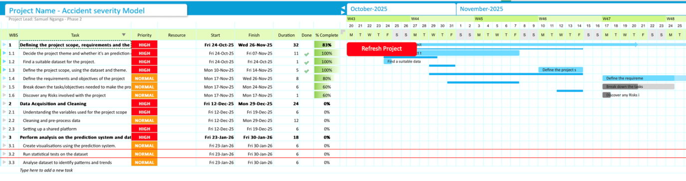
4.3 Risk Register
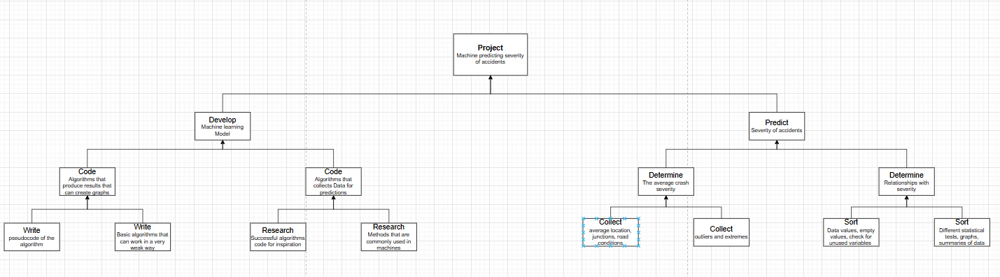
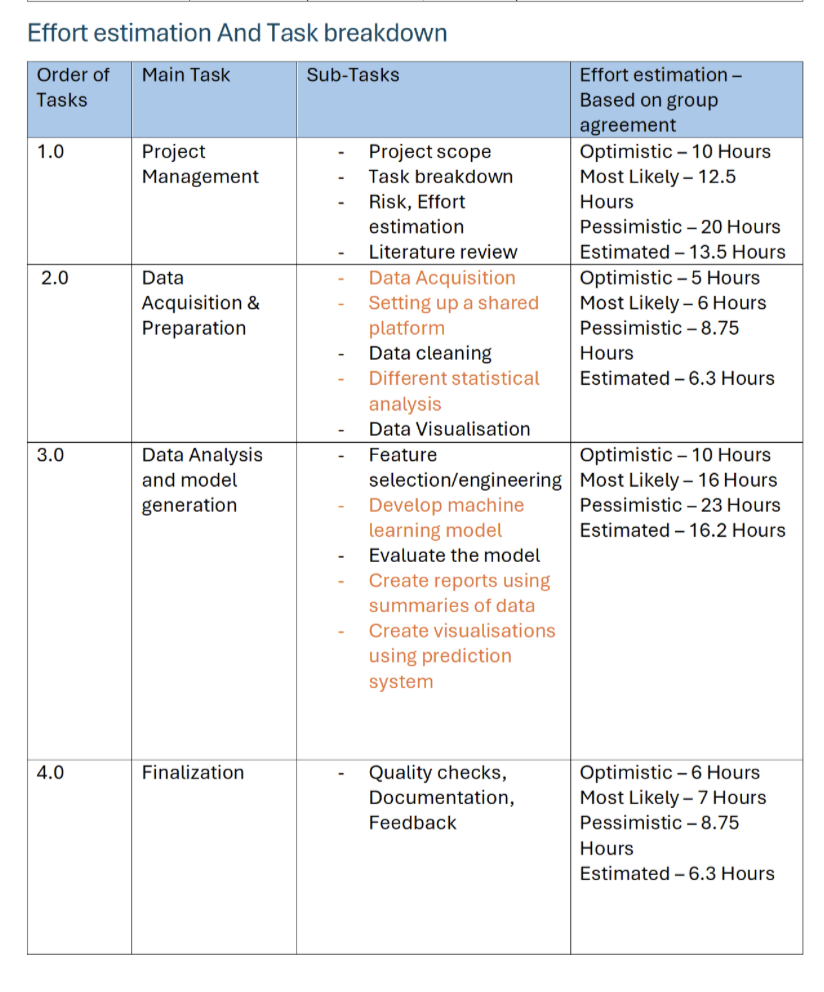
| Risk | What happened | Solution |
|---|---|---|
| Class imbalance | Model predicted only slight accidents | Dataset balancing |
| Too many districts (422) | Analysis too complex | Grouped into regions |
| Data inconsistencies | Spelling + categories messy | Cleaning + standardising |
5. Technical Solution
5.1 System Overview
A classification model was developed to predict accident severity using UK road accident data. The model uses variables such as weather conditions, road type, speed limit, and time of day to classify accidents as slight or serious. SPSS was used for data processing and model development.
5.2 Data Flow Diagram
Raw Data → Cleaning → Transformation → Model → Output
The dataset is cleaned and transformed before being used to train the model, which outputs accident severity predictions.
5.3 Data Preparation
Relevant variables were selected based on the literature review. Data cleaning included fixing inconsistencies, standardising categories, and removing unnecessary variables.
A key issue was the large number of local authority districts (422), which was resolved by grouping them into broader regions and creating a new variable, Local_Authority_District_new.
These steps improved data quality and reduced complexity for modelling.
5.4 Model Development
Initial models showed high accuracy (~85%) but predicted all cases as slight accidents, revealing a class imbalance issue.
To address this:
The target variable was recoded into a binary outcome
Data balancing techniques were applied
A CRT decision tree model was selected over CHAID due to its better handling of variables and more reliable prediction performance.
5.5 Final Model Performance
The final model achieved approximately 61% accuracy on the test dataset. It performed better at predicting serious accidents (64.6%) compared to slight accidents (57.3%), showing improved detection of the minority class.
The similar performance between training and test datasets suggests that the model generalises well and is not overfitted. This indicates that the model has learned meaningful patterns rather than memorising the data.
Although the overall accuracy is moderate, this is expected due to the complexity of real-world accident data and the initial class imbalance. The improvements made to the dataset allowed the model to produce more balanced and reliable predictions.
6. Data Analysis & Visualisations
6.1 Severity Distribution
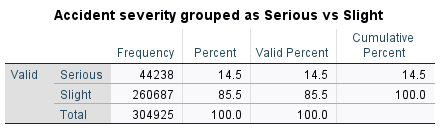
Figure 1: Distribution of Accident Severity
The dataset shows a clear class imbalance, with 85.5% of accidents classified as slight and only 14.5% as serious. This indicates that severe accidents are relatively rare compared to minor incidents.
This imbalance is important for predictive modelling, as it can bias models toward the majority class and reduce their ability to correctly identify serious accidents. This issue was addressed during model development through data balancing.
6.2 Temporal Patterns
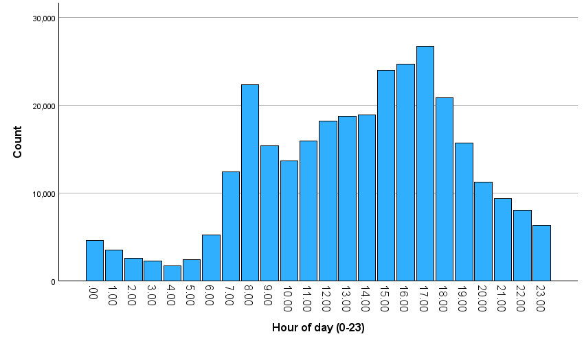
Figure 2: Hourly Distribution of Accidents
Accident frequency varies throughout the day, with the lowest counts between 00:00 and 05:00 due to reduced traffic volume. From early morning, accidents increase steadily, peaking between 16:00 and 18:00 during evening commuting hours.
This peak is likely driven by congestion, driver fatigue, and time pressure. While both slight and serious accidents follow similar patterns, slight accidents increase more sharply, suggesting that higher traffic volumes mainly result in minor collisions.
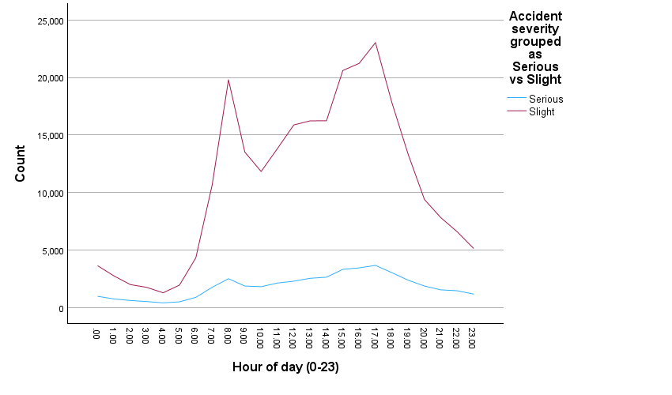
Figure 3: Monthly Accident Trends (2021 vs 2022)
Monthly trends show clear seasonal variation, with accident frequency increasing from spring to autumn and peaking between October and November. This is likely influenced by reduced daylight and worsening weather conditions.
A noticeable drop in December 2022 appears to reflect incomplete data rather than a real-world decline, highlighting the importance of data completeness when interpreting seasonal patterns.
6.3 Environmental Factors
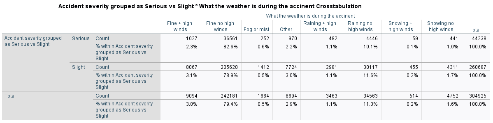
Figure 4: Accident Severity by Weather Conditions
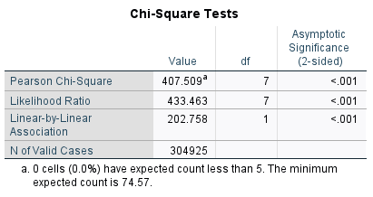
Weather conditions show a statistically significant relationship with accident severity (χ²(7) = 407.509, p < .001). Most accidents occur in fine weather, likely due to higher traffic volume rather than lower risk.
Although fewer accidents occur in adverse conditions such as rain or snow, these environments may increase the likelihood of more severe outcomes due to reduced visibility and poorer road surface conditions.
6.4 Road & Location Factors
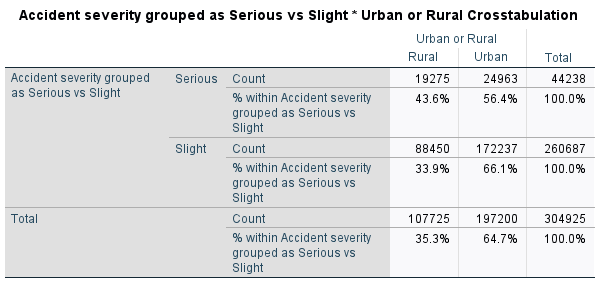
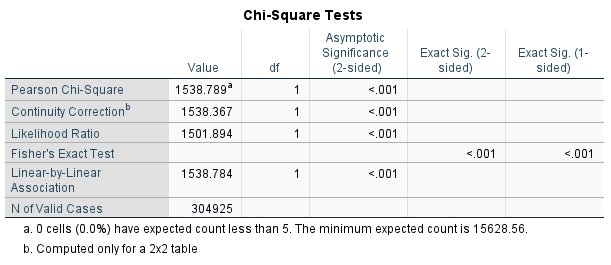
Figure 5: Accident Severity by Urban vs Rural Areas
Location plays a significant role in accident severity. While most accidents occur in urban areas (64.7%), rural areas account for a higher proportion of serious accidents.
This may be due to higher speed limits, reduced lighting, and fewer traffic control measures. The relationship is statistically significant (χ²(1) = 1538.789, p < .001), confirming that accident severity is strongly associated with location.
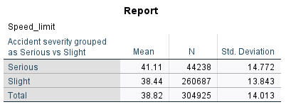
Figure 6: Speed Limit by Accident Severity
Speed limit analysis shows that serious accidents occur at higher average speeds (41.11 mph) compared to slight accidents (38.44 mph). The distribution indicates that severe accidents are more common in higher-speed environments. This supports the conclusion that speed is a key factor influencing accident severity, as higher speeds increase impact force and reduce reaction time.
6.5 Summary of Key Findings
The exploratory analysis identifies several key factors influencing accident severity. Temporal patterns show that accidents are strongly linked to traffic volume and commuting behaviour. Environmental factors such as weather and lighting influence severity but are less significant when considered alone.
In contrast, location and speed-related variables show stronger relationships with severity. Rural areas, higher speed limits, and single carriageway roads are all associated with more severe accidents.
Overall, the findings suggest that accident severity is more strongly influenced by speed, location, and traffic conditions than by individual factors such as vehicle type or weather alone. These insights directly informed the selection of variables used in the predictive model.
7. Predictive Model
7.1 Model Selection
The CRT model was chosen over other models due to its interpretability and suitability for categorical variables, making it easier to understand how different factors influence accident severity.
7.2 Model Development
Initial models achieved high overall accuracy (~85%); however, they predicted all cases as slight accidents. This revealed a class imbalance issue, where the model favoured the majority class and failed to identify serious accidents.To address this, the target variable was recoded into a binary outcome (severe vs slight), and data balancing techniques were applied to improve representation of the minority class.
7.3 Model Improvement
Further improvements were made by switching from a CHAID model to a CRT model, which provided more effective splits and improved prediction performance. These adjustments allowed the model to classify both slight and severe accidents rather than predicting only one outcome.
7.4 Final Results
The final model achieved approximately 61% accuracy on the test dataset. It performed better at predicting serious accidents (64.6%) than slight accidents (57.3%), indicating improved detection of the minority class. The similar performance between training and test datasets suggests the model generalises well and is not overfitted. While overall accuracy is moderate, this reflects the complexity of real-world accident data and the challenges associated with class imbalance.
8. Evaluation & Lessons Learned
8.1 Model Evaluation
The model identified key patterns influencing accident severity, particularly the impact of speed, location, and time. However, performance was limited by class imbalance and the lack of behavioural variables.
Although overall accuracy was moderate, this is expected in real-world data where severe accidents are rare. Data balancing improved the model’s ability to produce more reliable predictions.
8.2 Risk Reflection
The main risk encountered was class imbalance, which initially caused the model to predict only slight accidents. This was addressed through data balancing.
Another issue was the large number of districts, which increased complexity. Grouping these into regions improved both analysis and model performance.
8.3 Use of Feedback
Feedback from peers and mentors led to improvements in data preparation, model selection, and result interpretation. This helped refine the model and improve overall project quality.
8.4 Future Improvements
Future work could include using more advanced models and incorporating behavioural variables to improve prediction accuracy.
9. Collaborative Process
The project was managed using GitLab for version control, ensuring all team members contributed regularly. Meeting logs and task tracking demonstrated consistent collaboration and use of agile practices.
10. Conclusion
This project demonstrated that accident severity is influenced by multiple interacting factors, including environmental conditions, road characteristics, and time. The predictive model achieved moderate accuracy and provided useful insights into these relationships, although its performance was limited by data constraints such as class imbalance.
Overall, the findings highlight the importance of data preparation and variable selection in improving predictive modelling, while also indicating that further improvements could be achieved with more detailed data and advanced modelling techniques.
References
Adanu, E.K., Hainen, A. and Jones, S. (2018) ‘Latent class analysis of factors that influence weekday and weekend single-vehicle crash severities’, Accident Analysis & Prevention, 113, pp. 187–192.
Berhanu, Y., Alemayehu, E. and Schröder, D. (2023) ‘Examining car accident prediction techniques and road traffic congestion’, Journal of Advanced Transportation, 2023, Article ID 6643412.
Bozorg, S., Tetri, E., Kosonen, I. and Luttinen, T. (2018) ‘The effect of dimmed road lighting and car headlights on visibility in varying road surface conditions’, Leukos, 14(4), pp. 259–273.
Das, S., Barua, S., and Hossain, A. (2025) ‘Unravelling the complex relationship between weather conditions and traffic safety’, Journal of Transportation Safety & Security, 17(5), pp. 572–611.
International Transport Forum (ITF) (2016) Zero road deaths and serious injuries: Leading a paradigm shift to a safe system. Paris: OECD Publishing.
International Transport Forum (ITF) (2021) Road safety annual report 2021. Paris: OECD Publishing.
International Transport Forum (ITF) (2022) Road safety annual report 2022. Paris: OECD Publishing.
Jamal, A. et al. (2021) ‘Injury severity prediction of traffic crashes with ensemble machine learning techniques’, International Journal of Injury Control and Safety Promotion, 28(4), pp. 408–427.
Kaggle, Saher Muhamed (2023) ‘Road Accident Records in Kensington and Chelsea (January 2021)’ Available from: https://www.kaggle.com/datasets/nextmillionaire/car-accident-dataset/data (kaggle.com in Bing)
Pourroostaei Ardakani, S. et al. (2023) ‘Road car accident prediction using a machine-learning-enabled data analysis’, Sustainability, 15(7), 5939.
Shawky, M., Kishta, M. and Al-Harthi, H. (2017) ‘Investigating factors affecting the occurrence and severity of car accidents’, Transportation Research Procedia, 25, pp. 2098–2107.
Individual Reflective Essay
Throughout this project, my main contribution focused on data preparation, exploratory data analysis, and model development using SPSS, as well as interpreting and presenting the results.
I worked extensively with SPSS syntax to import, clean, and transform the dataset. This included recoding variables, grouping accident severity into a binary outcome (serious vs slight), and creating new variables such as hour of day and month. I also reduced dataset complexity by filtering local authority districts with low case counts. These steps improved the quality and usability of the dataset for analysis.
I carried out exploratory data analysis by producing graphs and statistical tests to identify patterns in accident severity. For example, I analysed accidents across time and used chi-square tests to examine relationships between severity and factors such as weather conditions and urban versus rural locations. This helped me understand how statistical evidence supports conclusions rather than relying only on visual patterns.
I was also involved in developing and improving the predictive model. Initially, the model showed high accuracy but predicted all cases as slight accidents. This helped me understand the impact of class imbalance and why accuracy alone can be misleading. To address this, I contributed to recoding the target variable and applying balancing techniques, which improved the model’s ability to classify both slight and serious accidents.
In addition, I contributed to interpreting and writing up the model results, explaining the model performance and the reasons behind the improvements made. This helped me develop my ability to clearly communicate technical findings in a structured and understandable way.
Working as part of a team improved my collaboration skills. We used GitLab to manage our work, share files, and track progress, ensuring that contributions were organised and tasks were completed efficiently.
Feedback played an important role in improving the project. Feedback highlighted issues with model performance and clarity, leading to improvements in both the modelling process and how results were presented. This showed me the importance of refining work based on feedback.
There were also ethical considerations in this project. The dataset was publicly available and did not include personal identifiable information, reducing privacy concerns. However, the lack of behavioural variables, such as driver speed or impairment, may limit model accuracy and introduce bias. This highlights the importance of understanding data limitations.
Overall, this project improved my skills in data analysis, statistical testing, predictive modelling, and communication. It also highlighted the importance of data quality, critical thinking, and continuous improvement.